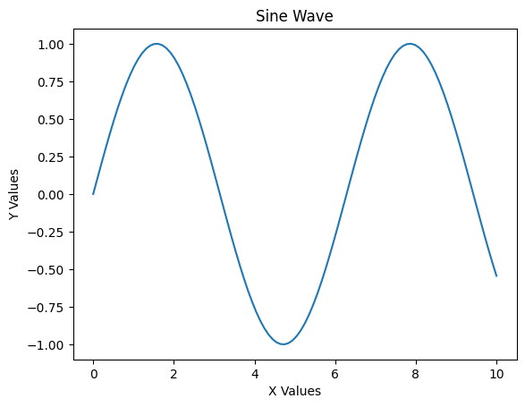
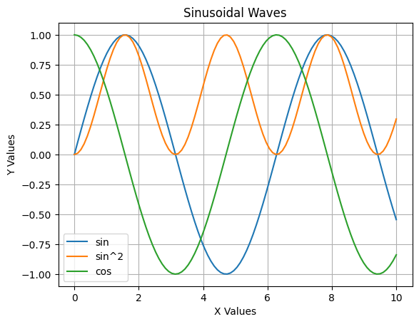
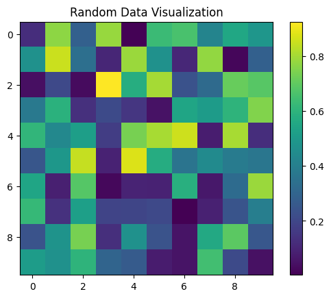
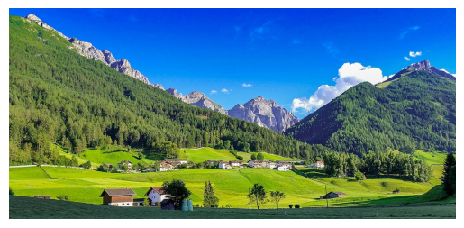

Jul 04, 2026 | 656 words | 7 min read
14.1.1. Materials#
Strings#
Here is the link to the Python Official Documentation on strings
Strings as sequences of characters#
A string is a sequence of characters. In Python, strings are immutable sequences of Unicode code points.
String literals#
A string literal is a sequence of characters enclosed in single quotes (’…’) or double quotes (”…”).
String manipulation as an immutable sequence#
For strings x and y with indices i, j and
k, the following operations are supported:
Indexing :
x[i],x[-i]Slicing :
x[i:j],x[i:j:k] # start, stop, stepConcatenation :
x + yRepetition :
n * x, where n is an integerMembership test :
x in y,x not in yLength :
len(x),min(x),max(x)Iteration :
for i in xComparison :
x == y,x != y,x < y,x <= y,x > y,x >= ySearching :
x.find(y),x.rfind(y),x.index(y),x.rindex(y)Counting :
x.count(y)Ordering :
sorted(x),reversed(x)
String methods#
For strings x and y, the following methods are supported:
- x.lower() # lowers the case of all characters
- x.upper() # uppercases all characters
- x.title() # capitalizes the first character of each word
- x.capitalize() # capitalizes the first character of the string
- x.split() # splits a string into a list of substrings
- x.strip() # removes leading and trailing whitespace (lstrip, rstrip)
- x.replace() # replaces a substring with another substring (old, new)
- x.join() # joins a list of substrings into a single string
- x.startswith() # checks if a string starts with a specified prefix (prefix, start, end)
- x.endswith() # checks if a string ends with a specified suffix
- x.isalpha() # checks if all characters are alphabetic, returns Boolean
- x.isdigit() # checks if all characters are digits, returns Boolean
- x.isalnum() # checks if all characters are alphanumeric, returns Boolean
- x.islower() # checks if all characters are lowercase, returns Boolean
- x.isupper() # checks if all characters are uppercase, returns Boolean
- x.isspace() # checks if all characters are whitespace, returns Boolean
File I/O#
The playing_with_strings.py file is a
Python script which shows you how to use the strip() and
split() functions. Open this file in VS Code, read it, and
experiment with it before doing the next exercise.
File Input#
open() function#
Opens a file and returns a file object.
Syntax: open(file, mode)
Example: f = open("hail_purdue.txt", "r")
read mode (default) - “r”
write mode - “w”
append mode - “a”
binary mode - “b”
read/write mode - “r+”
read/write binary mode - “rb+”
read/write append mode - “a+”
read/write append binary mode - “ab+”
close() function#
Closes the file. Must be called after the file is opened.
Syntax: f.close()
with statement#
automatically closes the file
Syntax:
with open(file, mode) as f:
# code block
read()method - reads the entire filereadline()method - reads a single line from the filereadlines()method - reads all the lines from the file
File Output#
write() method - writes a string to the file
writelines() method - writes a list of strings to the file
pathlib#
The pathlib package provides a convenient way to handle file paths and
directories using methods and attributes tailored for path manipulations.
Here is the link to the Python Official Documentation on
pathlib
pathlib is a built-in Python library that provides an
object-oriented approach to working with filesystem paths. It allows you to easily
manipulate, traverse, and interact with directories (a.k.a. folders) and files.
Commonly Used pathlib Methods#
Method |
Description |
|---|---|
.iterdir() |
Can iterate over files and directories in the given path. This makes it easy to check file extensions and process each file individually. |
.name |
Can be used to access the filename. |
.suffix |
Can be used to access the extension from a path. |
Using pathlib#
Since pathlib is included in Python 3.4 and later, so no pip installation is
required. You can simply import it as follows:
from pathlib import Path
Exploring Directories:#
You can check whether a directory exists and whether it is a folder:
from pathlib import Path directory = Path("dataset") # Replace with your actual directory path if directory.exists() and directory.is_dir(): print(f"{directory} exists and is a folder.") else: print(f"{directory} does not exist.")
You can list all files and subdirectories in a given directory:
for item in directory.iterdir(): print(item) # Prints each file or folder within the directory
Viewing Files and their Extensions:#
You can filter files by their extensions (such as .png or .jpg):
# Find all CSV files in the directory csv_files = list(directory.glob("*.csv")) print("CSV Files:", csv_files) # Find all PNG and JPG image files in the directory image_files = list(directory.glob("*.png")) + list(directory.glob("*.jpg")) print("Image Files:", image_files)
matplotlib#
Here is the link to the Python Official Documentation on
matplotlib
matplotlib is a plotting library for the Python programming
language and its numerical mathematics extension NumPy.
Installing matplotlib#
Enter the following command in the terminal:
python3 -m pip install matplotlib
Basic Plotting:#
The most basic plot is the line plot.
A line plot is created by specifying the
xandyvalues of the data points you want to plot and then calling theplot()function.The
plot()function takes thexandyvalues as arguments and creates a line plot.The
show()function is used to display the plot.The
title(),xlabel(), andylabel()functions are used to set the title, x-axis label, and y-axis label of the plot, respectively.The
savefig()function is used to save the plot as an image file.The
legend()function is used to add a legend to the plot.
Example
import numpy as np
import matplotlib.pyplot as plt
# Create some sample data
x = np.linspace(0, 10, 100)
y = np.sin(x)
# Create a line plot
plt.plot(x, y)
# Set the title and labels
plt.title("Sine Wave")
plt.xlabel("X Values")
plt.ylabel("Y Values")
# Display the plot
plt.show()

You can overlay multiple plots on the same figure
Example
import numpy as np
import matplotlib.pyplot as plt
# Create some sample data
x = np.linspace(0, 10, 100)
y1 = np.sin(x)
y2 = np.sin(x) ** 2
y3 = np.cos(x)
# Create overlaying plots
plt.plot(x, y1, label='sin')
plt.plot(x, y2, label='sin^2')
plt.plot(x, y3, label='cos')
# Set the title and labels
plt.title("Sinusoidal Waves")
plt.xlabel("X Values")
plt.ylabel("Y Values")
# Add a legend
plt.legend()
# Add a grid
plt.grid()
# Display the plot
plt.show()

Types of Plots#
matplotlibprovides a variety of plots that can be used to visualize data.Some commonly used plots are: Line Plot, Scatter Plot, Bar Plot, Histogram, Pie Chart, Box Plot, Heatmap, etc.
Displaying Images#
The
imshow()function is used to display an image.
Example
import numpy as np
import matplotlib.pyplot as plt
# Create a 2D array of random values
data = np.random.rand(10, 10)
# Display the data as an image
plt.imshow(data, cmap='viridis') # cmap defines the color map for a grayscale image
plt.colorbar() # Add a colorbar to show the scale
plt.title("Random Data Visualization")
plt.show()

Example
import numpy as np
import matplotlib.pyplot as plt
# Display just an image
image = plt.imread("nice_image.jpeg") # Replace with your actual image file path
plt.imshow(image)
plt.axis('off') # Hide axes for better visualization
plt.show()

Customizing Plots#
matplotliballows you to customize the appearance of the plots by setting various properties such as the color, line style, marker style, etc.You can also add labels, titles, legends, and annotations to the plots.
Multiple Plots#
You can create multiple plots in the same figure by using the
subplots()function.The first two arguments to the
subplots()function are the number of rows and the number of columnsExample:
fig, ax = plt.subplots(3, 1) # Add plots or images to each subplot ax[0].plot(x, y1) # Standard line plot ax[1].scatter(x, y2) # Scatter plot ax[2].imshow(image) # Display an image
The
tight_layout()function is used to adjust the spacing between the plots.